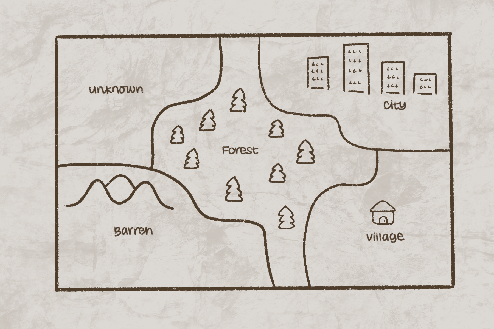

Seeds of Life begins with you, the main character! Your adventure begins in a world devastated by climate change. Countless environments and habitats have been destroyed, leaving behind very few places capable of sustaining life.
You start your journey in a small village near the city. It's all you've known but it's time to see what else the world has to offer. Hence, you travel to the city, where you meet someone who's fled their homeland due to climate change and taken refuge in the city. They tell you of a barren wasteland nearby, devoid of any flora, just waiting for someone to bring it back to life.
After checking out the area for yourself, you excitedly run back home to talk to your grandma (who has a surprisingly green thumb given the climate crisis) to learn everything you can about plant cultivation. Unfortunately, you come home to a sad sight, your grandma, who told countless tales of a world once green with life, is now on her deathbed. Before she dies, she hands you a special gift. A seed of her favorite plant that she kept all this time, never planting the seed for fear that it wouldn't sprout and go to waste. You ask her what the plant is and how to care for it, but she passes on to the next life before she can utter a word.
After laying your grandmother to rest, you run back to the city to find out any information you can about plant life, in hopes someone will recognize the seed your grandmother gave you. As you talk to more and more people, they give you knowledge of plant care and gift you seeds from their homes long gone.
You decide to go back to the barren wasteland to bring back life to it, one seed at a time.
The Introduction...
The Adventure Begins!
Regions
Throughout the game, you'll explore a region affected by various disasters on your quest to expand the greenery and restore the natural environments that once decorated the landscape. There are various areas within this region you can travel to which can help you understand the kind of plant life that used to live there and how they have been affected by climate change. In these areas, you can also learn how to take care of the local plants and grow them in your garden. You will unlock these areas one at a time and watch them gradually transform as you build your garden and make progress through the game.
|
The Village The Village is the place you call home, and where you begin your adventure. It is one of few settlements in this region where people live other than the city, and is fortunate enough to not face the same disasters as many other regions. The Village is cozy and quiet, and brings a feeling of welcomeness in the community that surrounds you. The Village is your home and the initial location you find yourself in in Seeds of Life. |
The City \ The City is full of pollution, covered with smog, and devoid of natural life. However, it serves as a place of refuge for many people who have fled from climate disasters and the destruction of their homelands, becoming a safe haven from the worsening climate crisis. The City is where your character will meet most of their companions and gather the supplies they need to expand their garden and help the environment. The City is the second place you explore. |
The Barren Land The Barren Land has nothing: no settlements, no wildlife, and nothing but flat ground stretching for miles. To most people, it’s nothing more than a wasteland. However, what many don’t know is that the soil is fertile which provides the perfect opportunity: a place to start your garden. THe barren land serves as the primary place where you plant your garden, slowly transforming the area into an abundant and lush environment. The Barren Land is the third place you are introduced to. |

The Forest The Forest is a large region of land that connects many of the other locations you can travel to. While it was once home to a thriving ecosystem with diverse plants and animals, it was now nothing more than a withered husk of what it used to be. Most of the forest was burnt by wildfires, and what remained has gradually died off over time. The remaining plants are dry and hanging on to life, waiting for the area around them to begin to grow and flourish to bring new life into the area. |
Characters
Along your journey, you will also meet many non-playable companions who are all refugees who fled to the city after their homelands were affected by climate change. Each of them has their own story to tell about theif former lives, which you can learn about when talking to them. They also carry with them a unique seed which has personal meaning to them. You can aquire these seeds and add them to your garden as you become friends with them, and they can also help you aquire supplies and take care of your garden as time goes on.
|
Tigerlily Beachwood Seed: Mangifera Indica (Mango) Background: Tigerlily, “Lily”, Beachwood and her family, are the last remaining survivors from their home island of Aurora Isle. As far as they know…Lily was just a kid when she still carries the soul of Aurora Isle with her and hopes to return one day to see if anything remains from her once beautiful home. |

Noel Lepe Location from: The DesertSeed: Prickly Pear Cactus Background: Although coming from the desert, Noelle's family still manages to live off the land growing whatever crops they could. Using environmentally sustainable crop choices, they take care of the land and soil that provided for them for so long. Unfortunately, their practices couldn't withstand the increasingly chaotic temperature of her region due to climate change. |
Carter Lan Location from: The MountainsSeed: Wild Garlic Background: Carter grew up in the city, but her parents had moved here from a nation filled with mountains. They always spoke fondly of their former home and though Carter wanted to travel there, she never had time. They also said that lots of wild garlic grew there, so Carter decided to try growing some herself. However, she hasn't done anything yet due to being busy. |

Joyce De La Cruz Location from: The DesertSeed: California Grape Background: Joyce's family worked in the grape fields for generations, up until there was no more water that could be used for the fields. Her family members lost their jobs when the fields could no longer produce fruit– the vines too shriveled to grow anything. She always hated eating grape seeds, so she held onto some from the last few bunches that her family members picked. |

Armando Swiftwater Location from: The DesertSeed: Desert Willow Background: Armando lost his brother in a wildfire. The climate had gotten so bad in his region that wildfires occur every year and as such his people are nomadic in nature. He loves the desert willow as it represents the beauty still able to be found in a normally barren wasteland. |